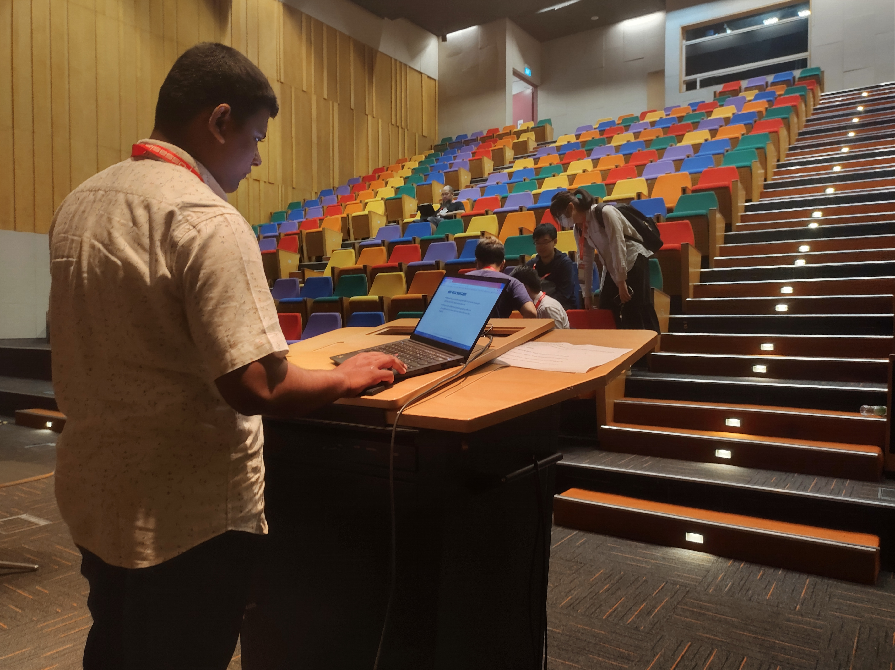
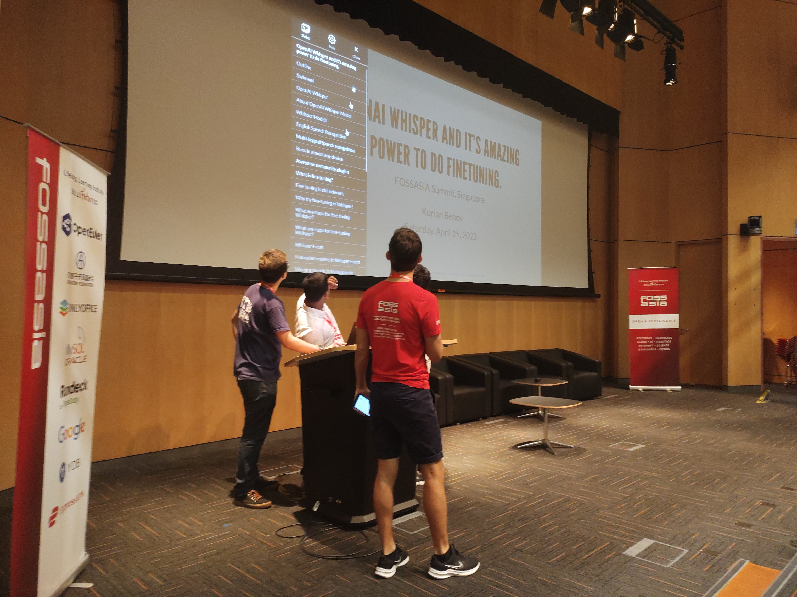
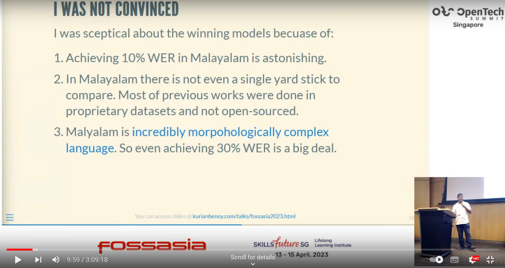

Links to talk
Please note mine was the first session of the day.
Pictures from Session




Talk in 30 seconds
I talked about what is OpenAI whisper and some of it’s amazing feature. I highlighted the importance of finetuning Whisper in low-resource language like Malayalam which is able to get almost 90% accuracy compared to -10% accuracy of OpenAI whisper model weights. The results where calculated with a new github project called malayalam_asr_benchmarking created by me.
Thanks to
In my talk I mentioned the following people and organizations. Beyond that first of all, I would like to thank FOSSASIA team for giving me this opportunity to talk in FOSSASIA Summit 2023. I would like to thank Abhijit PA for taking pictures of my talk and Thorsen for moderating my session.
Questions received
- Someone was curious to know the relationship between Malayalam language and the Sanskrit language. I told him that Malayalam is a Dravidian language and there is another class called Devanagiri languages which according to my knowledge is originated from Sanskrit.